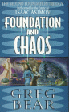
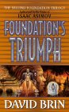
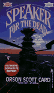

by Gregory Benford
Foundation and Chaos (Second
Foundation Trilogy)
by Greg
Bear
Bear told a good
story in the trilogy. Much better book then volume 1 (January 2001)
Foundation's Triumph (Second
Foundation Trilogy)
by David
Brin
I originally bought this book because I liked Brin's other
books. When I discovered this was a trilogy, I went back and read
the other books before I could read this one. I'm sorry I
bothered. The authors must have sat around and laid out the plot
and what things must happen, but they didn't get the spacing right.
This last book has everything stuffed into it with poor literary devices
trying to tie it together. There are stowaways, competing robot
groups (some not revealed until near the end), destruction of all
mankind's history, kidnapping, counter-kidnapping, chimps appearing out of
closets, another kidnapping all helped along by characters who would sit
around and discuss what just happened to make sure the reader understood
what was going on. Come on, Mr. Brin, you are a better writer then
that. And then, to top it all off, a time machine! Argh, I was
so mad I could spit.
If you are a foundation nut or a science fiction fan, you will need to
read these books. For me, I was very disappointed.
by Robert Charles Wilson
The ending was a little contrived, but overall this is very good science fiction. A complex, alternative biology world is presently clearly and convincingly, the alternate technologies are believable and the characters are good. (December 2000)

by Orson Scott Card
The is supposed to be a classic and many people sing it's praises. I found the story ridiculous and far fetched. Maybe for an adolesent male looking for a feeling of power and place in the world, this would be a liberating story. It's interesting science fiction and, as such, is a good read. But I don't classify it as one of the best. (September 2000)
Speaker for the Dead
by Orson
Scott Card
This is a more mature
story. It deals more with the people and the consequences of thier
actions. An interesting world with humans trying to understand an
alien culture. (October 2000)
by Anne Rice
Dark and sensual. The beginning is better than the ending but a good read. I like the "sensual" part of the dark side. This is a textbook of feelings of death and darkness and should only be read by someone who can appreciate all the facets of life. (August 2000)
by Yves Nievergelt
This is not "made easy". Very dense math with little explanation of why one would do it this way. Not for the faint of heart or people without a masters in mathematics.
by Kenneth R. Trester
Everyone else is getting rich in the stock market. Why not me?
by Michael Webb
My wife of 15+ years is still the best thing in my life. (May 2000)
by Philip K. Dick
I don't know how I missed this science fiction classic. Published in the 60's, this book describes a world where the US and Britain lost world war 2 and the world has been split between Japan and Germany. The ending is a little weak, but the concept and the execution of the whole story is wonderful. (April 2000)
by Stuart M. Kaminsky
An Inspector Porfiry Rostnikov mystery. Nicely set in Moscow before glasnost. The inspector searches out a murderer while also handling the bureaucracy and the KGB. A fun read. (April 2000)
by Ernest Hemingway
It's still the classic. The use of the Spanish phrasing and words. The individual acceptance of war and death. And the "death in a rainy ditch" Hemingway ending. A very good read if you can't remember it from high school. (April 2000)
by Susan Trott
I liked The Holy Man's Journey so much (I read it first) I was really expecting to love this book. This book is small and episodic -- each short chapter is a story about some facet of the holy man's life or about one of the people how have come to visit him. The Holy Han's Journey gave me a feel for what it meant to be a holy man but this book is just an introduction to his world. (April 2000)
by Eric Bonabeau, Marco Dorigo, Guy Theraulaz
A good survey of the current research into the mathematical simulations of biological swarm systems. The researchers are just starting to figure out how things like ant colonies work (no central planning but large scale organization). For different types of activities (transporting materials, building, path discovery, ...), several algorithms are presented and described in how they relate to a studies biological system. It's still amazing that we're just figuring this out -- nearly all of the referenced research is in the 1990's. (March 2000)
by Stanislaw Lem, Marc E. Heine (Translator)
This is an amazing piece of science fiction. It is the future and mankind has created artificial intelligence and man is trying to understand what he has created. The machine write un-intelligible novels and sometimes will stoop to talking to it's creators. Scholars study these machines and their utterances and write books. Imaginary Magnitude is a collection of the prefaces to these books. Prefaces allow the writer to comment on and compare the book with other works in the area and this gives us, the reader of the prefaces, a look into the world of these new machines. An excellent book that I'd recommend to all science fiction readers. (January 2000)